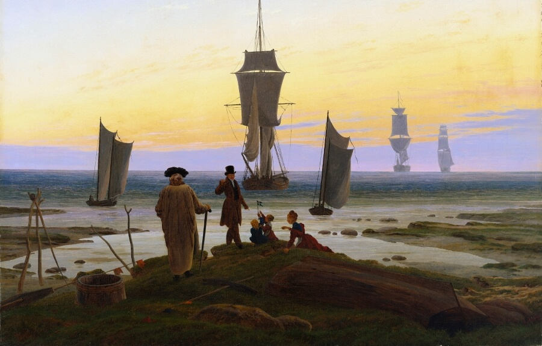

English
English
 Français
Français Deutsch
DeutschVolkslieder:
Historical German Music

The Stages of Life, Caspar David Friedrich, 1835
Contained here is a collection of historical German songs and poems, from time periods ranging from the Middle Ages to just after the Great War. These may have been sung at a variety of instances, such as during workdays, while relaxing at home, during marches, or at any number of special occasions. This website is not to be interpreted as political in any manner. It is to simply be a repository of historical songs for educational purposes.
Song List

Summer landscape on the Banks of the Alban Lake, Oswald Achenbach, date unknown